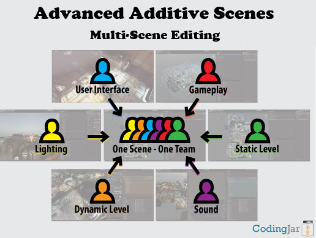

Senior Capstone Post 5 | Corona virus, Remote work and a ton of cuts
Tyler Chapman, Mar, 25, 2020
Welcome Back! Quite a lot has happened since my last blog, both with our game and with the world. If you have been living under a rock, then good, stay there, because the world has been plagued by a global pandemic, the coronavirus. With this virus affecting everything and everyone in day to day life, it has put quite our team in an odd position. After our spring break ended, Champlain closed its campus. All classes are now remote. Most states are forcing residents to stay inside. Our team is now in a position that no other past Champlain game dev team, Champlain class nor Champlain student has been in prior. Before I get into our team’s current course of action and how our current situation will affect future work, I want to talk about the work I did before the pandemic.
Coronavirus

As we were all going home for Spring break, most of our team was not going to do any work and stay out of the build. For a long time, both Scott and I wanted to do a clean up of our entire project/repo. With no one doing any work, Spring break was the perfect time to overhaul our entire project. Not only did we want to delete all unused work and organize any existing work, but we also wanted to implement a feature called multi-scene loading. In Unity, multi-scene loading works by loading multiple scenes additively on one another to create one large combined scene. Generally, multi-scene is implemented much earlier on in a project as it has many benefits, but when we started this project, we were unsure if we were going through, so we did not use it. Aside from organization, one other reason we wanted to implement multi-scene was so that we could split up various groupings of objects into separate scenes. The groups I split our levels into included the script's scene, the props scene, the environment scene, the marching cubes scene and the lighting scene. By splitting up the project this way, it reduced the complexity of the project and should reduce merge conflicts. When a dev works on a particular feature, such as lighting, they can place every sub-scene into the editor, but only change and save the lighting scene. By changing our work pipeline to a scene by scene basis, it should allow for an easier transition to remote work. When the school closer came around, the decision to use multi-scene proved to be even more worthwhile. Along with adding in multi-scene loading, I finished saving and loading all data relevant to game progress. I will not get into every single part of the game that is saved and loaded as it still uses the same base underlying system I talked about a few blogs ago.
Multi-scene loading diagram
With moving to a remote class, not only for this capstone class but for every class I am currently enrolled in posses an interesting challenge. Teachers are scrambling to figure out how to move their curriculum to an online setting while students are struggling to keep the motivation to do their work. We are only a week into remote classes, and I can say that our project is going to end in shambles. Our team has already cut large portions of what we originally intended to get into the game. Most notably, we will no longer have a tutorial lever nor a level 2, we are not looking into having controller support and our last upgrade, the super vacuum is no longer getting in. The game was over-scoped, to begin with, so trimming down our goal is the right decision, but for a game, we hope to publish to Steam, we need to have more content. I have always been rather worried about our team’s decision to publish to Steam, but now more than ever I am not sure what our end product will be. With the switch to a remote project, communication and consistency within our pipeline are direly needed. In our past sprints, it was blatant that our team has issues with both of these characteristics and one method we started to combat it was to amp up our work sessions on Saturday. With all the work being completely remote, it will be interesting to see how our group can handle it. From was has happened so far, it will be a complete train wreck. Communication is up slightly, but not to the point where we need it. Scott and my attempt at reducing merge conflicts has proved to be useless as two members have already completely overwritten one another as one of them did not follow the tutorial we posted on using multi-scene. Without complete dedication and commitment from our team, we will be in no position to publish, and no position to consider this game done.
I hope that the first week or two is just our team working it out, but that is also what I said when we started out at the beginning of the semester after cuts, and we made little to no progress in the areas we need up until this point. I am also starting to focus a lot more of my time on a job search rather than putting in countless hours into the project. I was at first hoping to have a somewhat polished and successful project to add to my portfolio, but with how everything is going now, I am somewhat doubtful. At a certain point, putting in extra work to fix issues caused elsewhere can only do so much, so knowing when to give up on a project is important. With that said, I am not done with this project and will continue putting in the hours I have been. If the group continues to deteriorate and no real progress is made either with the game or our team, I will slowly be putting in less work to the project. I do not like working on something and not giving it my all, but it has come to a point where why waste my time on a project that will go nowhere. In a few weeks, after a couple remote sprints, I hope our team pulls itself together. Having worked on the project from the start, I want it to succeeded and I want to make a great game we can publish. Our team has overcome a lot of problems, and I aim to add the Coronavirus onto that list.